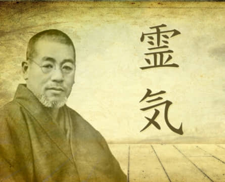

Caminho do Reiki
Reiki Tradicional
O Método Reiki é um Sistema Natural de Harmonização e Reposição Energética que mantém ou recupera a saúde. Reiki é um sistema próprio para despertar o poder que habita dentro de nós, captando, modificando e potencializando energia. Funciona como instrumento de transformação de Energias Nocivas em Benéficas.
Saiba mais...Karuna Reiki®
O Karuna Reiki® é uma energia de 'cura' que nos assiste no despertar para a Compaixão Universal. O Karuna Reiki® é a energia de compaixão em acção, por isso ensina-nos a ter mais compaixão pelos outros, mas também por nós próprios. Ajuda-nos a harmonizar os chakras superiores e inferiores, por isso quando discernimos a orientação e sabedoria do Divino, podemos movê-la para o reino físico para manifestação.
Saiba mais...Lightarian™ Reiki
O Lightarian Reiki oferece as energias de cura de Reiki mais potentes e de maior vibração disponíveis neste momento na evolução espiritual da humanidade. É também uma das formas mais únicas e expandidas de Reiki que aumenta a oportunidade de cura por meio de um aumento vibracional do processo de cura para um novo espaço de cura. Neste novo espaço estão as seis faixas vibracionais do Lightarian Reiki que foram organizadas em apenas quatro níveis.
Saiba mais...